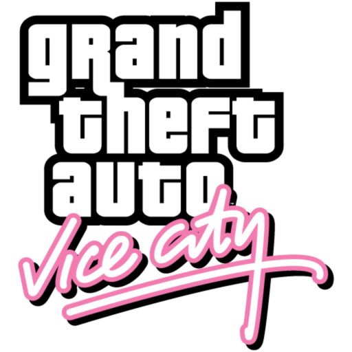
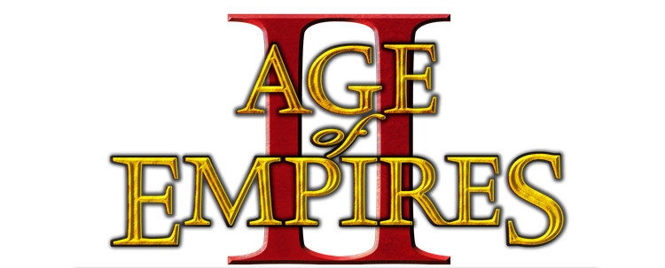

El Pac Man
 es un videojuego arcade creado por el diseñador de videojuegos Toru Iwatani de la empresa Namco, y distribuido por Midway Games al mercado estadounidense a principios de los años 1980.
Desde que Pac-Man fue lanzado el 21 de mayo de 1980, fue un éxito. Se convirtió en un fenómeno mundial en la industria de los videojuegos, llegó a tener el récord Guiness del videojuego de arcade más exitoso de todos los tiempos con un total de 293 822 máquinas vendidas desde 1981 hasta 1987 y acabó con el dominio de Space Invaders, donde la acción predominante era shoot 'em up (disparar a todos) para reemplazarla por un formato único, más humorístico y poco violento que gustó a muchísimas personas. "Todos los juegos que estaban disponibles en ese entonces -fines de los 70- eran de tipo violento, de guerra o como el Space Invaders", recordó en una entrevista Iwatani, agregando que "no había juegos que todos pudieran disfrutar, y especialmente no había ninguno para mujeres. Quería hacer un juego 'cómico' que las mujeres pudiesen disfrutar".
es un videojuego arcade creado por el diseñador de videojuegos Toru Iwatani de la empresa Namco, y distribuido por Midway Games al mercado estadounidense a principios de los años 1980.
Desde que Pac-Man fue lanzado el 21 de mayo de 1980, fue un éxito. Se convirtió en un fenómeno mundial en la industria de los videojuegos, llegó a tener el récord Guiness del videojuego de arcade más exitoso de todos los tiempos con un total de 293 822 máquinas vendidas desde 1981 hasta 1987 y acabó con el dominio de Space Invaders, donde la acción predominante era shoot 'em up (disparar a todos) para reemplazarla por un formato único, más humorístico y poco violento que gustó a muchísimas personas. "Todos los juegos que estaban disponibles en ese entonces -fines de los 70- eran de tipo violento, de guerra o como el Space Invaders", recordó en una entrevista Iwatani, agregando que "no había juegos que todos pudieran disfrutar, y especialmente no había ninguno para mujeres. Quería hacer un juego 'cómico' que las mujeres pudiesen disfrutar".
El GTA Vice City
 Grand Theft Auto: Vice City (también conocido por su abreviatura GTA: VC o, simplemente, Vice City), es un videojuego de acción-aventura. Es el cuarto título de la serie Grand Theft Auto y el segundo en gráficos 3D.El juego lanzado en 2002 de Rockstar north y publicado por Rockstar Games, implementa nuevos atributos como por ejemplo: poder agacharse (ideal en misiones de tiroteos), nuevas armas y mejores gráficos comparados con los anteriores de la saga Grand Theft Auto.
El Crash Bandicoot
Crash Bandicoot es un videojuego de plataformas desarrollado por Naughty Dog y publicado por Sony Computer Entertainment para PlayStation . El juego fue lanzado en América del Norte en septiembre de 1996 y en Europa en noviembre de 1996. Crash Bandicoot es la primera entrega de la serie Crash Bandicoot, que narra la creación del personaje principal a manos del antagonista de la serie Doctor Neo Cortex y el secuaz Doctor Nitrus Brio. La historia sigue a Crash mientras intenta evitar los planes de Brio y Cortex para dominar el mundo, y rescatar a su novia Tawna, una bandicoot femenina también desarrollada por Brio y Cortex. Crash Bandicoot recibió críticas generalmente positivas de los críticos, quienes elogiaron los gráficos y el estilo visual único del juego, pero criticaron sus controles y la falta de innovación como juego de plataformas. El juego vendió más de 6 millones de unidades, lo que lo convierte en el octavo juego de PlayStation más vendido de todos los tiempos,2 y el más vendido en ventas en los Estados Unidos.3 Una versión remasterizada, incluida en la colección Crash Bandicoot N. Sane Trilogy, fue lanzada para PlayStation 4 en junio de 2017 y portada a otras plataformas en junio de 2018.
El Gran Turismo 1
El juego más vendido en la PlayStation original, Gran Turismo, contiene 11 circuitos, 3 circuitos de rendimiento y múltiples eventos contrarreloj. Además tiene carreras de resistencia, 3 licencias y 172 coches. El modo GT no es tan vasto como en los lanzamientos posteriores, y la estructura es muy corta o sin forma, pero las características básicas del juego están presentes, incluyendo la habilidad de obtener vehículos tras ganar ciertos eventos. También se introdujo el sistema de pruebas para licencias, que califica al jugador para competir en ciertos eventos. El jugador empieza con un cierto número de créditos que son usados para comprar vehículos nuevos o usados de las tiendas especializadas de fabricantes (por ejemplo, una vende sólo Toyota, otra sólo Mitsubishi, y así), o de agencias de vehículos usados, y entonces puede mejorar su vehículo en la tienda de partes apropiadas para mejorar el resultado en las carreras. El jugador puede gastar sus créditos obtenidos por ganar carreras en modificaciones para su automóvil actual o para comprar uno nuevo. Ciertos eventos están sólo abiertos para ciertos vehículos o para conductores con cierta licencia. Todo esto con un equipo de 7 personas. La música de inicio de la versión europea y americana es un remix de los Chemical Brothers de la canción de los Manic Street Preachers "Everything Must Go". El juego contiene una selección un tanto limitada de canciones, que incluyen "Lose Control" de Ash tomada del álbum 1977, cuatro canciones del álbum "Swim" de Feeder ("Chicken On A Bone Reworked instrumental", "Shade Instrumental", "Tangerine Instrumental", "Sweet 16"), "As Heaven is Wide" de Garbage, "Oxyacetalene", "Skeletal", "Autonomy", e "Industry" de Cubanate.
El Age Of Empires II
 Apareció el 30 de septiembre de 1999, usando el mismo motor gráfico y la interactividad de su antecesor.20 Su trama se desarrolla desde la Edad Media hasta el Edad Imperial, situación que le permite a los jugadores escoger a una de las trece civilizaciones disponibles de Europa y Asia.21Microsoft publicó la primera expansión, Age of Empires II: The Conquerors, el 24 de agosto de 2000. Una de las principales innovaciones fue la de añadir nuevas unidades y civilizaciones, incluyendo por primera vez dos mesoamericanas (los mayas y los aztecas),22la expansión introdujo también una tecnología única para cada civilización. Se publicó la segunda expansión Age of Empires II: The Forgotten en el 7 de noviembre de 2013, añade 7 nuevas campañas, 5 nuevas civilizaciones, la posibilidad de que cada civilización tenga ahora dos tecnologías únicas, etc. La tercera expansión Age of Empires II: The African Kingdoms, salió en el 5 de noviembre de 2015, por primera vez el juego agrega civilizaciones africanas, añade 4 nuevas civilizaciones, 4 nuevas campañas, el modo de juego Sudden Death, etc. La cuarta expansión Age of Empires II: Rise of the Rajas salió en el 19 de diciembre de 2016, añade 4 nuevas campañas, 4 nuevas civilizaciones, nuevas unidades, etc. Age of Empires II: The Age of Kings tuvo un mayor éxito que los dos primeros juegos en el listón general; el sitio especializado Metacritic le concedió un 92% de puntuación.2324Microsoft vendió más de dos millones de copias y recibió varios premios por su creación.25Sin embargo, no obtuvo una acogida similar la expansión Age of Empires II: The Conquerors.26Age of Empires II: The Age of Kings y Age of Empires II: The Conquerors obtuvieron la distinción de "premio del juego de estrategia del año" de 2000 y 2001 por parte de la Academia de Artes y Ciencias Interactivas, respectivamente.2728 El 9 de abril de 2013 se lanzó el remaster Age of Empires II: HD Edition, en donde el juego se adapta a estos nuevos tiempos, mejor sombreado, mas colores, mejor texturas, el juego en HD, etc. El juego viene combinado con la primera expansión Age of Empires II: The Conquerors.
Desarrollador= Santiago Herbes